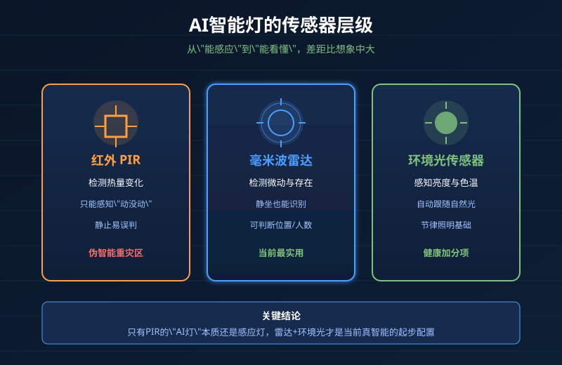
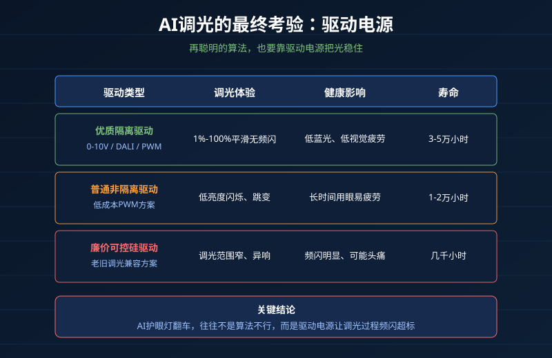

AI照明满天飞，但很多人没感觉到"智能"
2026年的灯具市场，不带个"AI"好像都不好意思上架。
语音控制叫AI、手机调光叫AI、能根据时间自动变亮度的也叫AI。但买回家一用，不少人发现："这不就是定时开关吗？跟我十块钱买的定时插座有什么区别？"
更离谱的是，有些"AI护眼灯"卖到大几百，结果调光时频闪严重；有些"AI氛围灯"除了颜色会变，根本看不懂人在干嘛；还有些"AI人体感应灯"人在沙发上看电视，它隔两分钟给你关一次。
问题不是AI照明没价值，而是很多产品把自动化包装成了AI，把噱头当成了卖点。
今天我们就从传感器、算法、驱动电源三个层面，把AI智能灯拆开看，告诉你哪些功能是真有用，哪些是多花的冤枉钱。
第一层：传感器——AI照明的"眼睛"
真正让灯从"遥控"变成"智能"的，不是App里的功能列表，而是传感器能不能准确感知环境和人的状态。
1. 红外人体感应（PIR）：便宜但粗糙
这是最基础、成本最低的方案。它通过检测热量变化判断"有没有人"。
优点便宜，缺点也很明显：
- 人在沙发静止不动，它以为没人，自动关灯
- 夏天室内温度高，误判率更高
- 只能感知"动没动"，不能判断人在哪、在干嘛
如果一盏"AI灯"只装了PIR，本质上就是个高级声控/感应灯，叫它AI有点牵强。
2. 雷达人体存在传感器：目前最实用的"真智能"
毫米波雷达可以检测微动——哪怕你在电脑前敲键盘、在沙发上看电视，它也知道你在。
好的雷达方案还能做到：
- 判断人数和位置
- 区分人在活动还是静止
- 联动灯光亮度、色温，甚至空调
这是目前家庭场景里，让灯"看懂人"最成熟的技术路线。如果你追求的是"人在灯亮、人走灯灭、不用动手"，雷达方案是目前最值得投资的。
3. 环境光+色温传感器：容易被忽略但很重要
白天窗边光线充足，灯自动调暗；晚上需要暖光助眠，灯自动降低色温。这种"跟着自然光走"的能力，是节律照明的基础。
但注意：很多灯号称有环境光感应，其实只是根据手机时间瞎猜，屋里拉着窗帘也按"下午三点"给你调白光，反而更难受。

第二层：算法——决定灯"聪不聪明"
传感器收集数据，算法决定灯怎么响应。这里差距最大。
伪智能：固定的" if-then "规则
很多所谓AI灯的逻辑是：
- 晚上8点以后，亮度降到50%
- 检测到人体，开灯
- 没人超过2分钟，关灯
这不是AI，这是定时器+感应器的组合。它不管你在看书、刷手机还是睡觉，都按同一个模板执行。
真智能：学习你的习惯并动态调整
真正的自适应照明，会结合：
- 你在不同时间、不同位置的用光习惯
- 当前环境光、色温、人的活动状态
- 是否需要助眠、专注、放松等不同光模式
比如你连续几天晚上10点调暗卧室灯，系统会学习并自动帮你提前进入"助眠模式"；再比如你长期在书桌前工作到深夜，它会记住这个位置需要更高显色指数的白光。
这种学习能力，才是AI照明和普通自动化的本质区别。
但说实话，目前市面上真正能做到这点的消费级产品还不多，大部分停留在"根据时间猜一猜"的阶段。
第三层：驱动电源——AI的"最后一公里"
很多人选AI灯只看传感器和App功能，忽略了最关键的一环：驱动电源。
再聪明的算法，最后也要通过驱动电源把指令变成稳定、无频闪、平滑过渡的光。如果驱动不行，AI调光就是灾难：
| 驱动质量 | 调光体验 | 健康影响 | 寿命 |
|---|---|---|---|
| 优质隔离驱动 | 1%-100%平滑无频闪 | 低蓝光危害、低视觉疲劳 | 3-5万小时 |
| 普通非隔离驱动 | 低亮度闪烁、跳变 | 长时间用眼易疲劳 | 1-2万小时 |
| 廉价可控硅驱动 | 调光范围窄、异响 | 频闪明显、可能头痛 | 几千小时 |
很多"AI护眼灯"翻车的根本原因，不是算法不行，而是配了一个廉价驱动。调光时电流不稳定，频闪指数飙升，反而伤眼。
另外，AI灯通常需要频繁调光、开关，对驱动的响应速度和寿命要求更高。驱动电源的开关次数、温升控制、保护电路，直接决定了这盏灯能不能陪你三五年。

怎么判断一款AI灯值不值得买？
记住这个简单的判断框架：
1. 看传感器配置
- 只有PIR：基本就是感应灯，别为"AI"多花钱
- 有雷达人体存在：算得上真智能
- 有环境光+色温传感器：能做节律照明，加分
2. 看调光技术
- 优先选0-10V、DALI或PWM数字调光
- 可控硅调光成本低但兼容性差，容易闪
- 调光范围低于10%还号称护眼的，要谨慎
3. 看驱动电源
- 隔离驱动优于非隔离
- 有 flicker-free（无频闪）认证更稳
- 支持宽电压、过温保护、短路保护
4. 看生态开放性
- 能接入涂鸦、HomeKit、Matter等开放生态的，未来扩展性更好
- 只用自家App、不开放协议的，容易变成孤岛
5. 别为伪需求买单
音乐律动、1600万色、语音换颜色——这些功能听起来很AI，但大部分人一年用不到几次。如果你只是为了"晚上回家自动开灯"，一个雷达感应+优质驱动的方案，比花里胡哨的App功能实用得多。
NEXLAMP的AI照明思路
我们做智能驱动十几年，始终坚持一个观点：AI照明的核心不是炫技，而是让光更稳定、更舒适、更省电。
- Zigbee+雷达联动方案：人体存在传感器+低功耗Zigbee模块，实现人来灯亮、人走缓灭，不忽亮忽暗
- 平滑数字调光：0.1%起调，无频闪、无跳变，适合长时间用眼场景
- 隔离反激驱动：高开关寿命、低发热，配合AI频繁调光更耐用
- 开放生态：支持涂鸦智能、Matter over Thread，不绑定单一平台
AI可以帮你决定"什么时候开什么光"，但驱动电源决定了这束光到底靠不靠谱。
总结
AI智能灯不是智商税，但很多打着AI旗号的功能确实是。
真正值得买的AI照明，要同时具备三样东西：
- 靠谱的传感器（最好有雷达人体存在）
- 有学习能力的算法（不只是定时规则）
- 优质的驱动电源（频繁调光不闪、寿命长）
少一样，都可能在实际使用中产生"这灯也不怎么智能"的失望感。
2026年买智能灯，别再只看"支持AI"四个字。拆开看传感器、算法、驱动，你才能知道自己是买了真智能，还是买了个会说话的定时器。